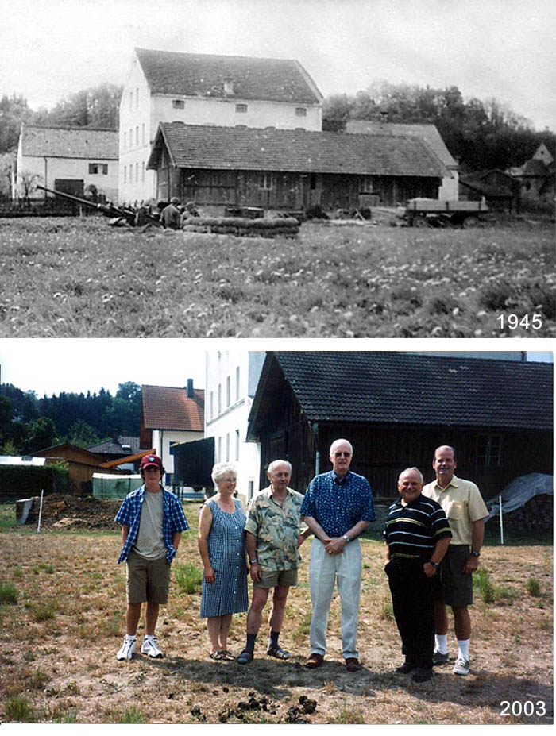
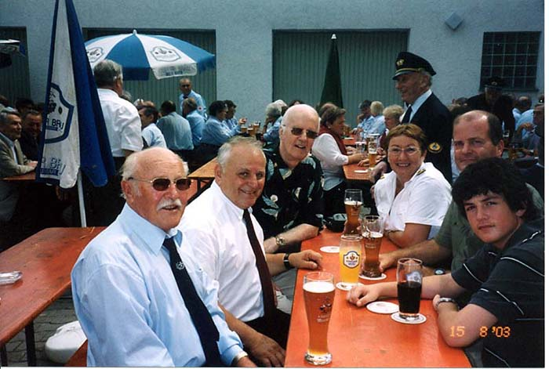
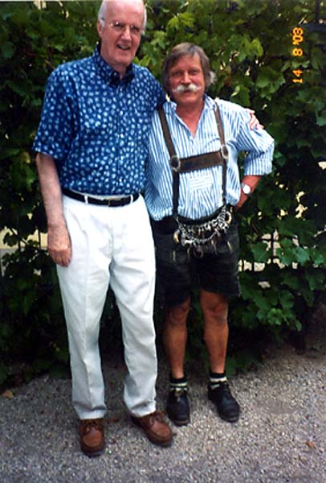
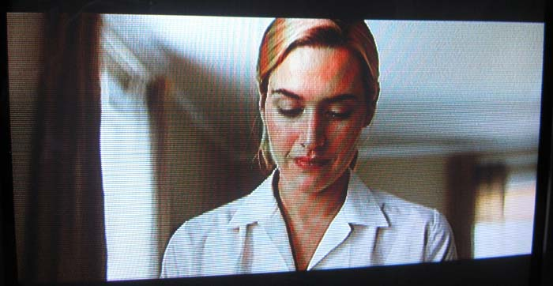
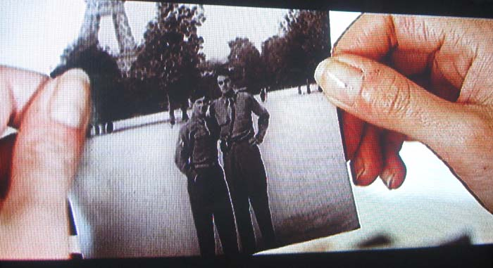
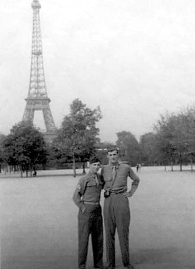
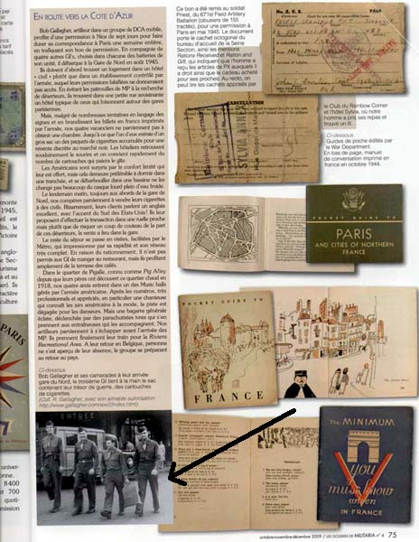
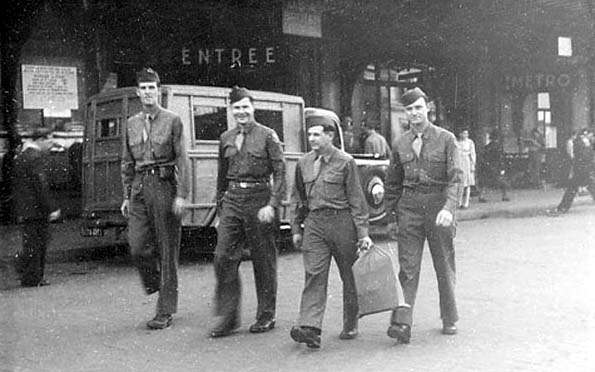

|
Table of Contents < - - - return
World War II Story by Robert F. Gallagher Side Effects of the Story "The world is a stage, but the play is badly cast". William Shakespeare. _______________________ Many members of organizations and governmental bodies; in addition to individuals, read the story of my experiences in World War II and asked to use some of the copy or the pictures. Still other requests resulted in more complex experiences for me. They have resulted in a trip to Germany, the use of my pictures in a movie, the inclusion of one of the chapters in a French magazine and a request for pictures by the Pentagon. More information about these happenings is described below. TRIP TO GERMANY: In the year 2003, the ex-burgemeister of Landau on the Isar, Germany, Nick Söltl, read my story and invited me to come to his village in Bavaria and join him and others in their yearly pilgrimage where they pray for the peace of the world. It is a combination religious ceremony and a testimonial to their war veterans. I agreed to attend and decided to take my son, Kevin, with me along with his son, Jack. Kevin speaks German that made it a lot easier to communicate with the people there. I raised a few eyebrows at home when I announced to my veteran friends that I was going to an army reunion - a German army reunion. Landau on the Isar was the location of our last gun position in 1945 and we were there when the war in Europe ended. Following are some of the pictures taken there during my 2003 trip and a comparison of the current scene with that in 1945.  Two photos above: top photo is our gun pit in 1945 in open field of farm called Steinfels Mill. Second photo from 2003 in exact same location as the gun pit, left to right are Jack Gallagher, owners of the mill Mr. and Mrs. Hofmeister, Bob Gallagher, Nick Söltl and Kevin Gallagher.  Enjoying tall beers as part of the celebration. Shown left to right are Unknown, Nick Söltl, Bob Gallagher, Mrs Hoell, Kevin Gallagher and Jack Gallagher.
The religious pilgrimage from St. Maria church to the small pilgrimage church Maria Steinfels.  Bob Gallagher has his picture taken with a guest in his lederhosen. MOVIE: "REVOLUTIONARY ROAD" In the year 2007, I was approached by DWNY Productions, Inc. who was working on a movie called "Revolutionary Road" starring Leonardo DiCaprio and Kate Winslet, two of the leading movie stars of the day. The studio was interested in using pictures from my story taken in Paris during my trip to Nice, France in 1945 - see Chapter 27, Rest and Relaxation. We arranged a financial agreement and although I sold them ten pictures they used only one. In it, they transposed my face with that of Leonardo DiCaprio. An advertisement for the movie released in 2008  Kate Winslet looks at old photos of her husband (Leonardo DiCaprio) from the War.  Kate Winslet's hands holding a picture that has been revised to show Leonardo DiCaprio's face in place of Bob Gallagher's.
 Original photo with of Mel and Bob Gallagher in front of the Eifel Tower FRENCH MAGAZINE In the year 2009, I was approached by the publishers of a French magazine called Militaria about using a photo and some of the information found in my story about my experience in Paris in 1945 - see Chapter 27, Rest and Relaxation. The magazine specializes in military subjects - as the title states - and it is a very high-class publication. The main subject of the issue where my information occurs is about German uniforms, primarily officers' hats. One of the other feature articles there is about the American soldiers in Paris during 1944-5 where my information is included.
Cover of the magazine.  My story inside the magazine with one of my photos in lower left. English Translation of the Story in the Magazine Below: Closer view of photo from Chapter 27 used in the Magazine article above 
THE PENTAGON While I get many requests from governmental organizations who want to use some of the copy or pictures from my story, the one from the Pentagon was a real surprise. Following is a copy of the request.
________________________ Table of Contents < - - - return ________________________ Footnotes and Source of Photographs. Copyright, Robert F. Gallagher, 1999 - 2015, all rights reserved on all images and content.
|